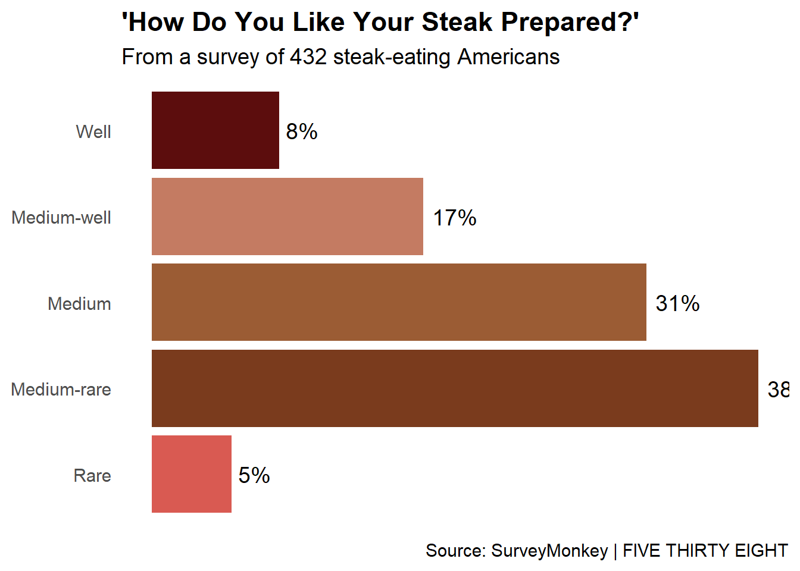
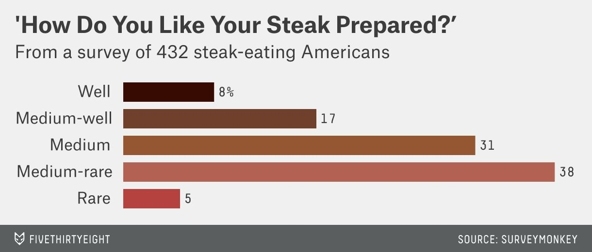

We shall start by loading a few packages that we think we might need for this data.
Warning: package 'here' was built under R version 4.4.2
Warning: package 'tidyverse' was built under R version 4.4.2
Warning: package 'stringr' was built under R version 4.4.2
Warning: package 'haven' was built under R version 4.4.2
Warning: package 'Hmisc' was built under R version 4.4.2
This data originates from the fivethirtyeight and it about how Americans order their steak. The originial image was a little simple to do but for all the complicated ones that i tried to do either didn’t provide the data set or i had a hard time extracting their data sets.
# Read the CSV filedf <-read_csv("data/steak-risk-survey.csv")
Rows: 551 Columns: 15
── Column specification ────────────────────────────────────────────────────────
Delimiter: ","
chr (14): Consider the following hypothetical situations: <br>In Lottery A, ...
dbl (1): RespondentID
ℹ Use `spec()` to retrieve the full column specification for this data.
ℹ Specify the column types or set `show_col_types = FALSE` to quiet this message.
# Inspect the column names to find the correct onecolnames(df)
[1] "RespondentID"
[2] "Consider the following hypothetical situations: <br>In Lottery A, you have a 50% chance of success, with a payout of $100. <br>In Lottery B, you have a 90% chance of success, with a payout of $20. <br><br>Assuming you have $10 to bet, would you play Lottery A or Lottery B?"
[3] "Do you ever smoke cigarettes?"
[4] "Do you ever drink alcohol?"
[5] "Do you ever gamble?"
[6] "Have you ever been skydiving?"
[7] "Do you ever drive above the speed limit?"
[8] "Have you ever cheated on your significant other?"
[9] "Do you eat steak?"
[10] "How do you like your steak prepared?"
[11] "Gender"
[12] "Age"
[13] "Household Income"
[14] "Education"
[15] "Location (Census Region)"
# Remove NA values and count occurrences of each steak preferencesteak_prefs <- df %>%filter(!is.na(`How do you like your steak prepared?`)) %>%# Remove NA valuescount(`How do you like your steak prepared?`) %>%mutate(Percentage = n /sum(n) *100) %>%rename(Preference =`How do you like your steak prepared?`) # Manually set percentages to match your given valuessteak_prefs <-data.frame(Preference =c("Well", "Medium-well", "Medium", "Medium-rare", "Rare"),Percentage =c(8, 17, 31, 38, 5))# Ensure proper factor levels for correct ordering in the plotsteak_prefs$Preference <-factor(steak_prefs$Preference, levels =rev(steak_prefs$Preference))# Print cleaned data to verify orderprint(steak_prefs)
Preference Percentage
1 Well 8
2 Medium-well 17
3 Medium 31
4 Medium-rare 38
5 Rare 5
let us now try to generate the plot and see how it looks like.
# Create the bar plot with correct orderggplot(steak_prefs, aes(x = Percentage, y = Preference, fill = Preference)) +geom_bar(stat ="identity", show.legend =FALSE) +geom_text(aes(label =paste0(Percentage, "%")), hjust =-0.2, size =5) +scale_fill_manual(values =c("#d95a52", "#7a3b1d", "#9b5c34", "#c47b62", "#5c0d0d")) +labs(title ="'How Do You Like Your Steak Prepared?'",subtitle ="From a survey of 432 steak-eating Americans",caption ="Source: SurveyMonkey | FIVE THIRTY EIGHT" ) +theme_minimal(base_size =14) +theme(plot.title =element_text(face ="bold"),axis.title =element_blank(),axis.text.x =element_blank(),axis.ticks.x =element_blank(),panel.grid.major =element_blank(),panel.grid.minor =element_blank(),plot.caption =element_text(hjust =1) )

For comparison, This is the original image that we tried to reproduce using data.

Steak PreferencesSurvey
using the same data set, we shall try to make an interactive table.
# Load necessary librarieslibrary(DT)
Warning: package 'DT' was built under R version 4.4.2
library(kableExtra)
Warning: package 'kableExtra' was built under R version 4.4.2
Attaching package: 'kableExtra'
The following object is masked from 'package:dplyr':
group_rows
# Load your data from CSV (adjust file path as needed)steak_data <- df # Replace with your actual file pathsteak_data<-steak_data%>%rename( "Household_income"=`Household Income`)table(steak_data$Age)
> 60 18-29 30-44 45-60 Response
131 110 133 140 1
Looking at the data, there is a character variable that is the first observation which seems not to make sense to me. It was full of NA values yet it disorganizes my data. We decided to drop it so as we can clear and better sense of the data.
steak_data <- steak_data[-1, ]
now lets check the age variable again.
table(steak_data$Age)
> 60 18-29 30-44 45-60
131 110 133 140
lets go ahead and make a table.
# Summarize Age Distributionage_summary <- steak_data %>%count(Age) %>%mutate(Percentage = n /sum(n) *100)# Summarize Household Incomeincome_summary <- steak_data %>%mutate(Income_Range =case_when( Household_income <30000~"<$30k", Household_income >=30000& Household_income <=60000~"$30k-$60k",TRUE~">$60k" )) %>%count(Income_Range) %>%mutate(Percentage = n /sum(n) *100)# Combine the summaries into one tablesummary_table <-bind_rows( age_summary %>%rename(Category = Age, Count = n, Percentage = Percentage) %>%mutate(Statistic ="Age Distribution"), income_summary %>%rename(Category = Income_Range, Count = n, Percentage = Percentage) %>%mutate(Statistic ="Income Distribution"))
lets create a table with some of the features that are required.
# Create a simple summary table simple_table <- summary_table %>%kable("html", caption ="Summary of Age and Income Distribution") %>%kable_styling(bootstrap_options =c("striped", "hover", "condensed")) %>%column_spec(1, bold =TRUE, color ="blue") %>%column_spec(2:3, background ="lightyellow") %>%column_spec(3, bold =TRUE, color ="red") %>%row_spec(1, bold =TRUE, color ="green") %>%add_header_above(c("Statistic"=1, "Category"=1, "Count & Percentage"=2)) %>%footnote(general ="Summary data for age and income distribution in the survey.")# Print the tableprint(simple_table)
<table class="table table-striped table-hover table-condensed" style="margin-left: auto; margin-right: auto;border-bottom: 0;">
<caption>Summary of Age and Income Distribution</caption>
<thead>
<tr>
<th style="border-bottom:hidden;padding-bottom:0; padding-left:3px;padding-right:3px;text-align: center; " colspan="1"><div style="border-bottom: 1px solid #ddd; padding-bottom: 5px; ">Statistic</div></th>
<th style="border-bottom:hidden;padding-bottom:0; padding-left:3px;padding-right:3px;text-align: center; " colspan="1"><div style="border-bottom: 1px solid #ddd; padding-bottom: 5px; ">Category</div></th>
<th style="border-bottom:hidden;padding-bottom:0; padding-left:3px;padding-right:3px;text-align: center; " colspan="2"><div style="border-bottom: 1px solid #ddd; padding-bottom: 5px; ">Count & Percentage</div></th>
</tr>
<tr>
<th style="text-align:left;"> Category </th>
<th style="text-align:right;"> Count </th>
<th style="text-align:right;"> Percentage </th>
<th style="text-align:left;"> Statistic </th>
</tr>
</thead>
<tbody>
<tr>
<td style="text-align:left;font-weight: bold;color: blue !important;font-weight: bold;color: green !important;"> 18-29 </td>
<td style="text-align:right;background-color: lightyellow !important;font-weight: bold;color: green !important;"> 110 </td>
<td style="text-align:right;background-color: lightyellow !important;font-weight: bold;color: red !important;font-weight: bold;color: green !important;"> 20.000000 </td>
<td style="text-align:left;font-weight: bold;color: green !important;"> Age Distribution </td>
</tr>
<tr>
<td style="text-align:left;font-weight: bold;color: blue !important;"> 30-44 </td>
<td style="text-align:right;background-color: lightyellow !important;"> 133 </td>
<td style="text-align:right;background-color: lightyellow !important;font-weight: bold;color: red !important;"> 24.181818 </td>
<td style="text-align:left;"> Age Distribution </td>
</tr>
<tr>
<td style="text-align:left;font-weight: bold;color: blue !important;"> 45-60 </td>
<td style="text-align:right;background-color: lightyellow !important;"> 140 </td>
<td style="text-align:right;background-color: lightyellow !important;font-weight: bold;color: red !important;"> 25.454545 </td>
<td style="text-align:left;"> Age Distribution </td>
</tr>
<tr>
<td style="text-align:left;font-weight: bold;color: blue !important;"> > 60 </td>
<td style="text-align:right;background-color: lightyellow !important;"> 131 </td>
<td style="text-align:right;background-color: lightyellow !important;font-weight: bold;color: red !important;"> 23.818182 </td>
<td style="text-align:left;"> Age Distribution </td>
</tr>
<tr>
<td style="text-align:left;font-weight: bold;color: blue !important;"> NA </td>
<td style="text-align:right;background-color: lightyellow !important;"> 36 </td>
<td style="text-align:right;background-color: lightyellow !important;font-weight: bold;color: red !important;"> 6.545454 </td>
<td style="text-align:left;"> Age Distribution </td>
</tr>
<tr>
<td style="text-align:left;font-weight: bold;color: blue !important;"> <$30k </td>
<td style="text-align:right;background-color: lightyellow !important;"> 430 </td>
<td style="text-align:right;background-color: lightyellow !important;font-weight: bold;color: red !important;"> 78.181818 </td>
<td style="text-align:left;"> Income Distribution </td>
</tr>
<tr>
<td style="text-align:left;font-weight: bold;color: blue !important;"> >$60k </td>
<td style="text-align:right;background-color: lightyellow !important;"> 120 </td>
<td style="text-align:right;background-color: lightyellow !important;font-weight: bold;color: red !important;"> 21.818182 </td>
<td style="text-align:left;"> Income Distribution </td>
</tr>
</tbody>
<tfoot>
<tr><td style="padding: 0; " colspan="100%"><span style="font-style: italic;">Note: </span></td></tr>
<tr><td style="padding: 0; " colspan="100%">
<sup></sup> Summary data for age and income distribution in the survey.</td></tr>
</tfoot>
</table>
# Display interactive table with DT for better user interaction (sorting, pagination)datatable(summary_table, options =list(pageLength =5, order =list(1, 'asc')))